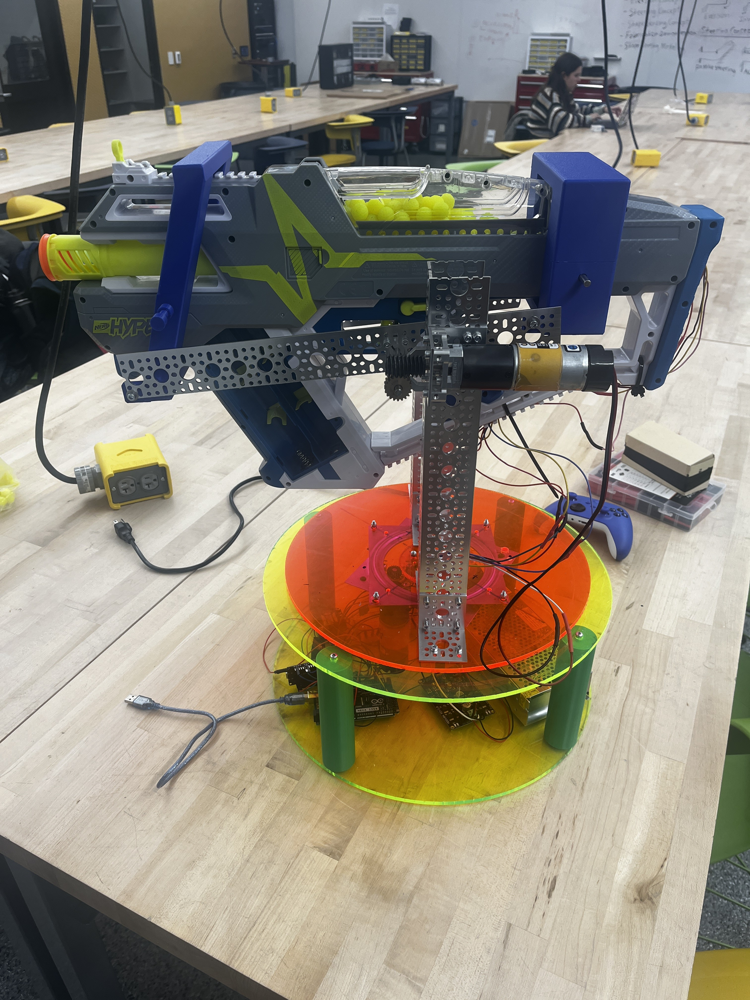
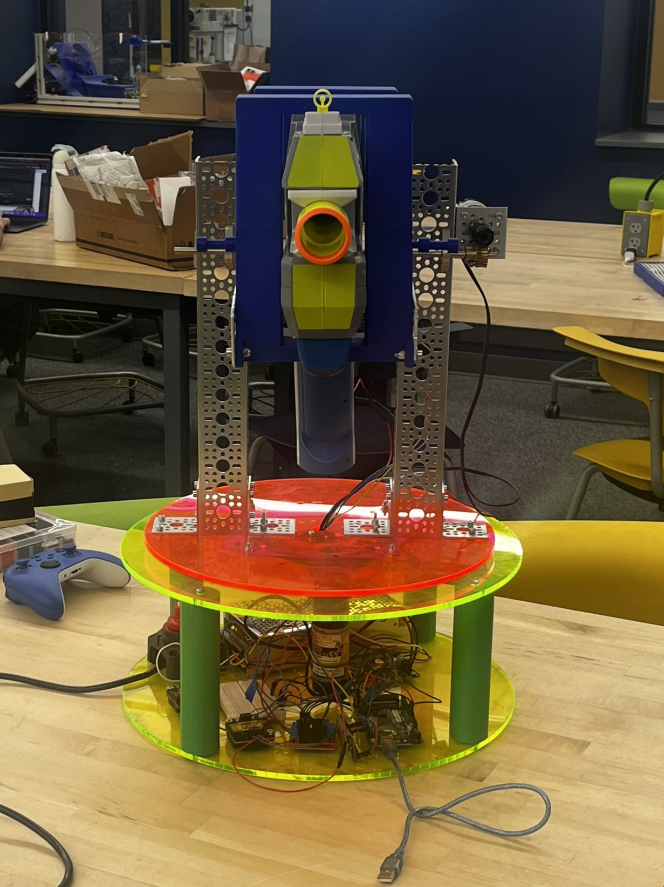

Hardware & Mechanical Design
The core of this build is a heavily modified Nerf Hyper Mach-100 mounted on a custom 2-axis motorized gimbal. To ensure reliable power delivery for high-torque applications without relying on easily depleted batteries, the entire system is powered via an AC outlet stepping down through a 12V DC converter.
- Turret Movement: Controlled by two 84RPM GoBuilda YellowJacket planetary gear motors, providing the perfect balance of speed and torque to smoothly pan and tilt the heavy blaster payload. These are driven by an MDD10A high-current motor controller.
- Blaster Firing Mechanism: The internal flywheel and pusher motors of the Nerf gun are regulated by an L298N dual H-bridge motor controller, allowing programmatic control over firing rates and spin-up sequences.



Troubleshooting Note: If the Xbox controller unexpectedly disconnects during operation, simply hold the pair button on the front of the controller to re-establish the Bluetooth connection with the ESP32. Additionally, if any specific component stops responding, the GitHub repository contains individual test programs to help isolate and debug issues with the motors, flywheels, or communication lines.
Electrical Architecture
The system utilizes a dual-microcontroller setup to separate wireless communication from strict motor control. An ESP32 is dedicated to establishing and maintaining a Bluetooth connection with a wireless Xbox Controller. Once inputs are received and processed, the ESP32 transmits commands via a TX/RX Serial connection to an Arduino Mega.
The Arduino Mega serves as the master hardware controller, interpreting the serial commands to physically drive the MDD10A and L298N motor drivers, ensuring that motor actuation doesn't interrupt the wireless communication loop.

Software Logic & Advanced Safeguards
Because the system handles high-RPM flywheels and powerful geared motors, sophisticated code logic was implemented to prevent jams, protect the hardware, and provide user feedback.
- 7-Second Flywheel Spin-Up Delay: When the fire sequence is initiated, the code enforces a strict 7-second timer before the pusher motor engages. This guarantees the flywheels have reached maximum RPM, preventing dart jams and motor burnout caused by feeding rounds too early.
- Haptic Rumble Feedback: The ESP32 utilizes the Xbox controller's built-in rumble motors to communicate system states. The controller vibrates to confirm connection, indicates when safety modes are toggled, and provides haptic feedback during the spin-up and firing phases.
- Safety Lockouts: Explicit safety toggle states are programmed into the controller layout. The turret cannot be fired accidentally; the safety must be disengaged via a specific button sequence, ensuring safe operation during startup and standby.
Build Process & Modifications
Constructing the turret required significant physical modifications to the original Nerf blaster and careful assembly of the mounting hardware. The base plate was designed and assembled with the completed wiring, a slip gear for continuous rotation, and a heavy-duty bearing attached to support the load of the mechanism.
To integrate the blaster into the remote-controlled system, the Nerf gun was opened and stripped of its factory safety mechanisms. The internal limit switches and default motor controls were removed entirely. This provided direct access to the inside of the gun, allowing the flywheel and the hopper system to be wired straight to the external motor controllers for custom programmatic control.